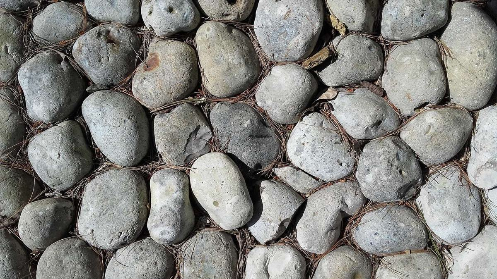
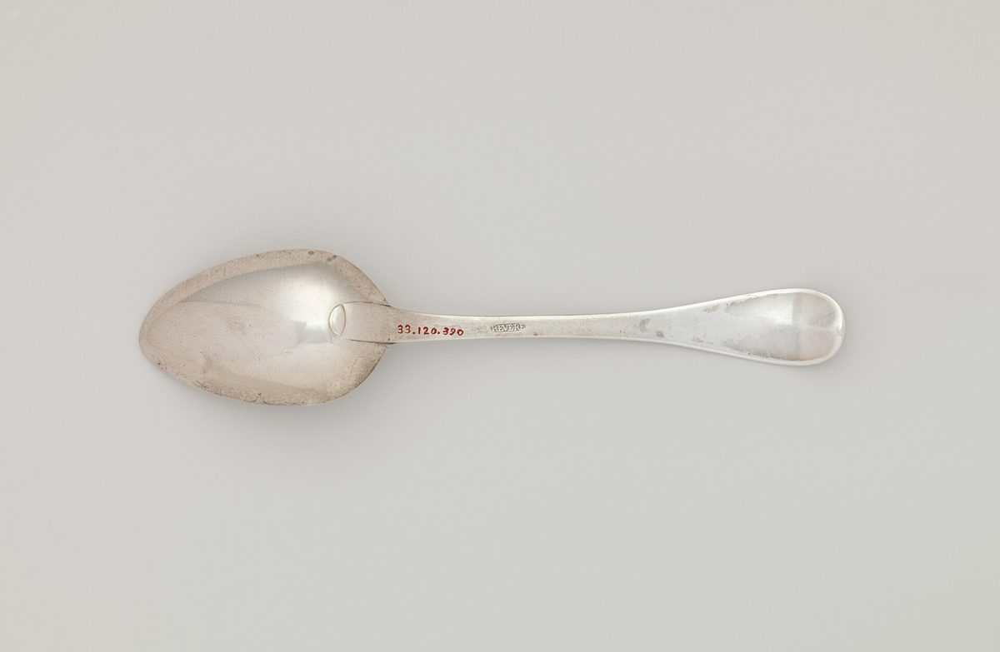

E 圧縮ゴム
お店のこと
溝側のゴムの層は、曲がるとき内側で縮む側。ページの中でも、ぎゅっとまとまった基本情報を置きました。
基本情報
確認できているのは二つだけ
確認できているのは、所在地とInstagramのアカウントだけです。お店の歴史やこだわりは、お聞きしてからここに書きます。
| 所在地 | 〒894-0412 鹿児島県大島郡龍郷町芦徳339-2 |
|---|---|
| 電話 | 準備中 |
| 営業時間 | 準備中 |
| 定休日 | 準備中 |
| ご予約 | 準備中 |
| 駐車場 | 準備中 |
| SNS | Instagram @cafe_asyo |
写真(イメージ)
素材のイメージ
写真は国外・撮影地不明のフリー素材で、お店のものではありません。



